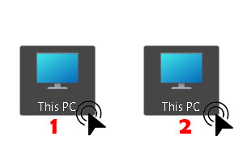
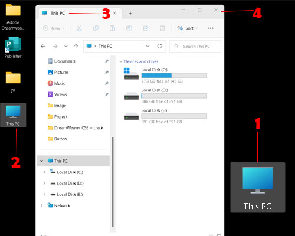
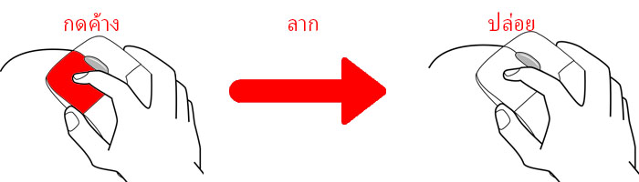
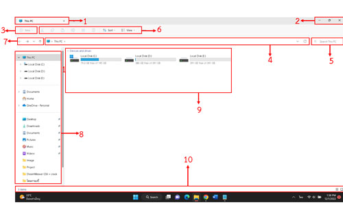

การคลิกเมาส์ (Click)
การคลิกเมาส์ คือ การใช้นิ้วชี้เคาะบนปุ่มซ้าย 1 ครั้ง แล้วปล่อยนิ้ว เพื่อใช้เลือกวัตถุหรือคำสั่งต่าง ๆ ในหน้อจอวินโดวส์ ดังตัวอย่างการคลิกเมาส์ทำได้ดังนี้

1. เลื่อนตัวชี้เมาส์วางบนไอคอนรูปเครื่องคอมพิวเตอร์จะปรากฏกรอบล้อมรอบ
2. คลิกเมาส์ปุ่มซ้าย 1 ครั้ง สังเกตไอคอนจะปรากฏสีที่เข้มขึ้น แสดงว่าไอคอนถูกเลือก
การดับเบิลคลิกเมาส์ (Double Click)
การดับเบิลคลิกเมาส์ คือ การใช้นิ้วชี้เคาะบนปุ่มซ้ายติดกัน 2 ครั้ง มักใช้ในกรณีเปิดโปรแกรมจากไอคอน ดังตัวอย่างการดับเบิลคลิกเมาส์ ดังนี้

1. เลื่อนคัวชี้เมาส์วางบนไอคอนรูปเคลื่องคอมพิวเตอร์จะปรากฏกรอบล้อมรอบ
2. ดับเบิลคลิกเมาส์ บนไอคอน This PC
3. สังเกตจะปรากฏหน้าต่าง This PC
4. คลิกปุ่ม X ปิดหน้าต่าง My Computer
การแดรกเมาส์ หรือ ลากแล้วปล่อย (Drag and Drop)
การแดรกเมาส์ คือ การใช้นิ้ชี้คลิกปุ่มเมาส์ด้านซ้ายไว้ แล้วเลื่อนเมาส์ไปในทิศทางที่ต้องการ แล้วปล่อยเมาส์ มักใช้เลือกวัตถุหลายชิ้น หรือเคลื่แนย้ายวัตถุไปยังตำแหน่งที่ต้องการ

4. ส่วนประกอบพื้นฐานของหน้าต่างหรือวินโดวส์
ส่วนประกอบต่าง ๆ ของหน้าต่างวินโดวส์มีส่วนประกอบสำคัญที่ควรทราบ ดังนี้

1. ไตเติ้ลบาร์ (Title Bar) แสดงชื่อของโปรแกรม แอป ตำแหน่งโฟลเดอร์หรือไฟล์ที่เปิดอยู่
2. ปุ่มควบคุมหน้าต่าง (Caption Buttons) ปุ่มควบคุมหน้าต่างวินโดวส์ ซ่อน ย่อ/ขยาย ปิด
3. เมนูไฟล์ (File Explorer Menu) แสดงคำสั่งที่ใช้ในการเปิดหน้าต่างใหม่ปรับแต่งโฟลเดอร์และการตั้งค่าต่าง ๆ
4. แอดเดรสบาร์ (Address Bar) แถบที่อยู่ แสดงตำแหน่งที่อยู่แบบเส้นทาง
5. ช่องค้นหา (Search Box) ค้นหาไฟล์ โฟลเดอร์ในเครื่องคอมพิวเตอร์
6. แถบริบบอน (Ribbon Toolbar) แถบเครื่องมือที่จัดกลุ่มคำสั่งที่เกี่ยวข้องกันไว้เป็นหมวดหมู่
7. ปุ่มการนำทาง (Navigation Button) แสดงทิศทางย้อนกลับ ไปข้างหน้า หรือเลือนตำแหน่งขึ้นของที่อยู่
8. หน้าต่างนำทาง (Navigation Pane) หน้าต่างแสดงรายชื่อของโฟลเดอร์ ไฟล์ หรือไดรฟ์ เป็นต้น
9. หน้าต่างแสดงข้อมูล (WindowContentPane) แสดงข้อมูลหรือเนื้อหาจากโฟลเดอร์หรือไดรฟ์ในหน้าต่างนำทาง
10. แถบสถานะ (Status Bar) แสดงสถานะการทำงานของหน้าต่างวินโดวส์
|